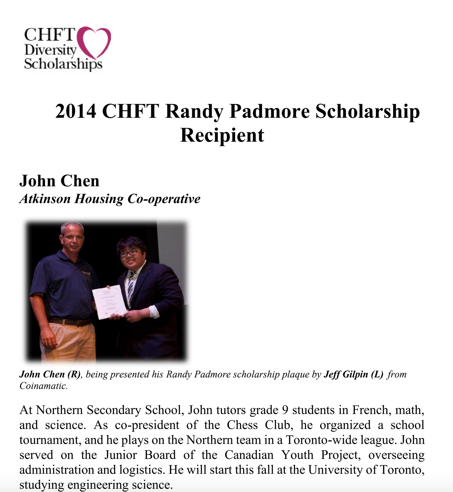
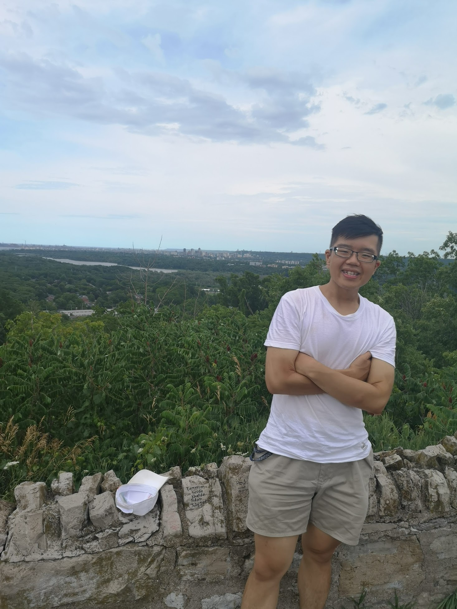
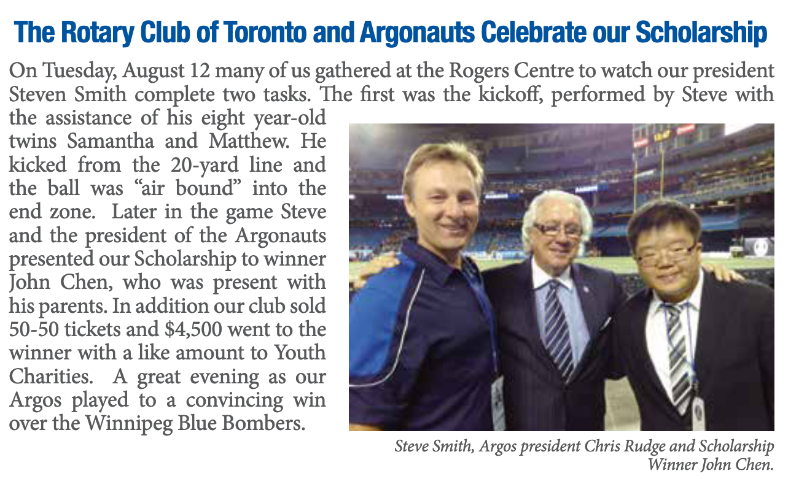

I've faced a lot of adversity in my life and have tried my best to persevere.
Weight loss
2014

2020

Financial difficulties and scholarships
I grew up in Alexandra Park Co-op, a low-income, subsidized housing community in downtown Toronto. I received over 15 scholarships
which helped me pay for school. They are listed here:
- 2014 President's Entrance Award 2000
- 2014 Burger King Scholarship 1000
- 2014 Platform 9 3/4 High School Graduation Award 1000
- 2014 Lu Zhen Chan Education Scholarship 500
- 2014 TD Bank Higher Education Grant 1000
- 2017 Goodwin O'Grady Academic Achievement Award 2000
- 2017 NSERC USRA 4500
- 2018 Galleria Supermarket Scholarship 1000
- 2018 Samuel Beatty Award 1000
- 2018 Canada Chinese Computer Association Award 500
- 2018 Woodsworth College Student's Association Scholarship 1000
- 2019 Pierre Karch And Mariel O'neill-Karch Scholarship 8000
- 2019 Dorothy Helen McRobb Scholarship 1000
- 2014-2018 Co-operative Housing Federation of Toronto Randy Padmore Diversity Scholarship 9000
- 2014-2019 Rotary Club of Toronto Four-year Scholarship 32500
- 2019 NSERC USRA (declined) 4500
Please keep this list confidential, as it is highly sensitive and private information to me. Thank you.
Here is one particularly memorable event from the Rotary scholarship event:

Please let me know if you would like more information! I can be reached at my application email.